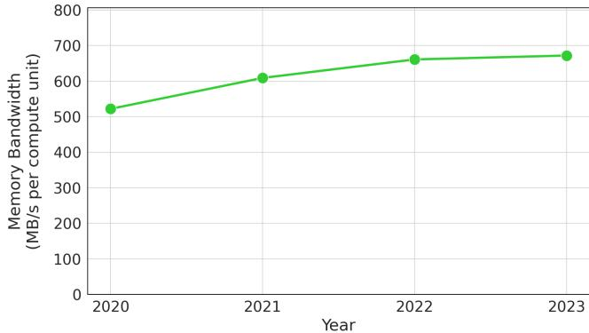
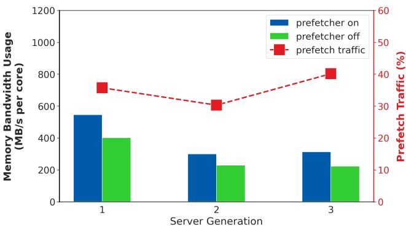
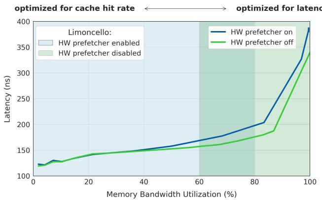
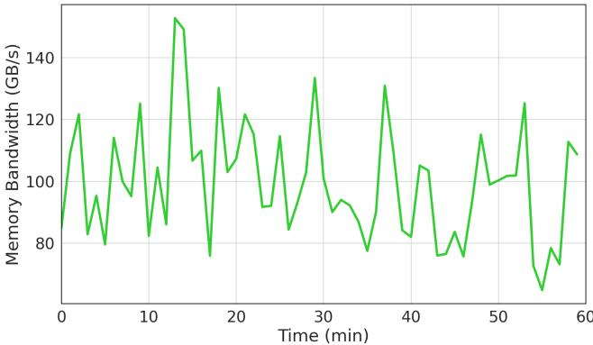
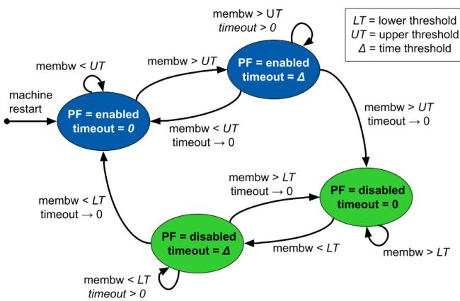
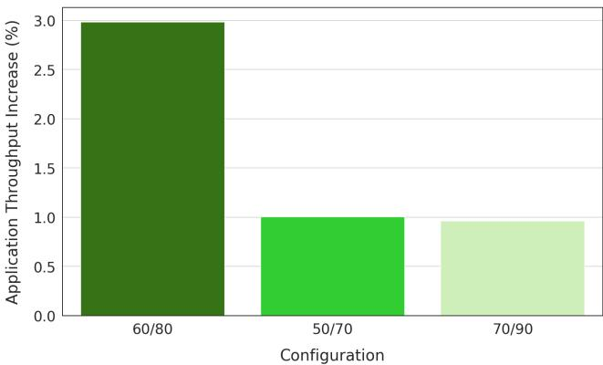
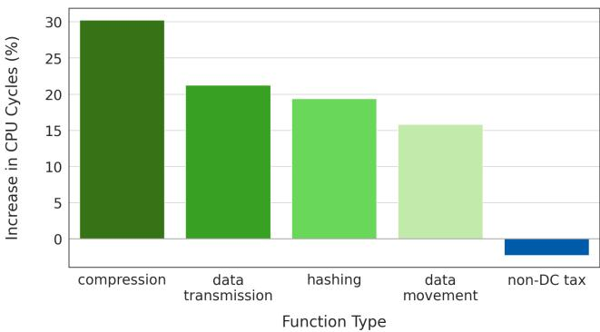
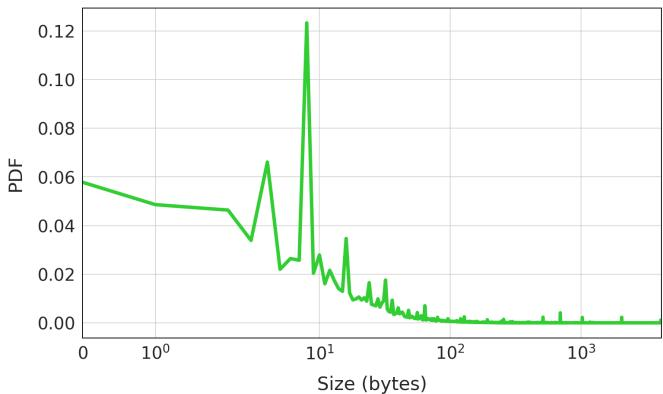
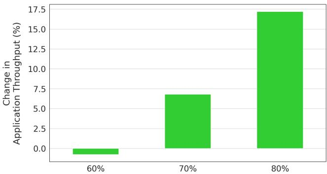
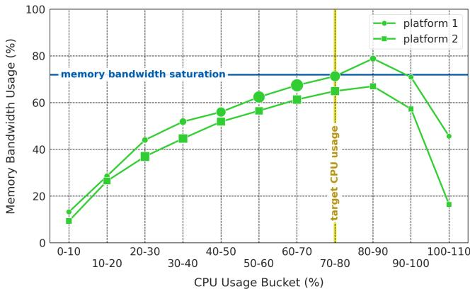

Limoncello: Prefetchers for Scale 图表详解¶
Figure 1. Average load-to-use latency per DRAM request reduces by 15% when hardware prefetchers are disabled. Data is gathered using the Intel MLC tool [10].¶

- 图表展示了在不同 Memory Bandwidth Utilization (%) 水平下，Load-to-Use Latency (ns) 的变化趋势，对比了 HW prefetcher on（蓝色线）与 HW prefetcher off（绿色线）两种状态。
- 随着内存带宽利用率从 0% 上升至 100%，两条曲线均呈上升趋势，表明系统负载越高，内存访问延迟越大。
- 在低带宽利用率区间（<40%），两条曲线几乎重合，说明此时硬件预取器对延迟影响微乎其微。
- 当带宽利用率超过 60% 后，HW prefetcher on 曲线开始显著高于 HW prefetcher off 曲线，尤其在 80%–100% 区间，差距急剧扩大，最高时差接近 50 ns。
- 根据图注，关闭硬件预取器可使平均 DRAM 请求的 Load-to-Use Latency 降低 15%，这一收益在高负载场景尤为明显。
- 数据采集工具为 Intel MLC tool，确保测量结果具备硬件级精度和代表性。
- 关键结论：在资源受限、高利用率的数据中心环境中，硬件预取器反而加剧内存延迟，因其引入额外的内存请求流量，导致排队延迟增加和带宽争用。
| Memory Bandwidth Utilization (%) | HW Prefetcher On (ns) | HW Prefetcher Off (ns) | Latency Reduction (%) |
|---|---|---|---|
| 0 | ~120 | ~120 | 0 |
| 50 | ~170 | ~160 | ~6 |
| 80 | ~200 | ~180 | ~10 |
| 90 | ~300 | ~260 | ~13 |
| 100 | ~390 | ~340 | ~15 |
- 此图是论文核心动机的可视化支撑：传统硬件预取设计未考虑数据中心高并发、高带宽压力场景，导致“越预取，越慢”的反直觉现象。
Figure 2. Memory bandwidth per core has plateaued over several generations of server CPUs.¶

- 图表展示了从2010年至2022年期间，服务器CPU代际演进中内存带宽（membw）与每核心内存带宽（membw per core）的增长趋势。
- 蓝色曲线代表总内存带宽（membw），呈现持续上升趋势，尤其在2014年后增长加速，至2022年达到约12倍增长。
- 绿色曲线代表每核心内存带宽（membw per core），在2010至2014年间略有波动，之后趋于平稳，基本维持在1倍左右水平，表明每核心可用带宽已进入平台期。
- 该图直观印证了论文第2.1节所述：尽管服务器核心数持续增加，但受物理引脚数量限制，每核心内存带宽并未同步提升，成为系统性能瓶颈。
- 数据对比显示，总带宽增长主要源于多核集成，而非单核带宽提升，凸显数据中心在高并发场景下面临的内存带宽资源稀缺性。
| 年份 | 总内存带宽增长 (membw) | 每核心内存带宽增长 (membw per core) |
|---|---|---|
| 2010 | ~1x | ~1x |
| 2012 | ~1.5x | ~1x |
| 2014 | ~2x | ~0.8x |
| 2016 | ~5x | ~1x |
| 2018 | ~7x | ~1x |
| 2020 | ~8x | ~1x |
| 2022 | ~12x | ~1x |
- 此趋势为Limoncello系统设计提供关键背景：在带宽受限环境下，传统硬件预取器因加剧带宽竞争而降低效率，需转向更精细的软硬件协同预取策略。
Figure 3. Average memory bandwidth usage of fleet workloads has increased over the last 4 years. Each point in the graph shows memory bandwidth usage per compute unit averaged across all workloads in the fleet.¶

- 图表标题为 Figure 3，展示的是 Google 数据中心集群（fleet）中工作负载的平均内存带宽使用情况，时间跨度为过去四年。
- 纵轴单位为 MB/s per compute unit，横轴为年份，从 2020 年至 2023 年。
- 数据点以绿色圆点标记，连接成一条上升趋势线，表明内存带宽使用量呈持续增长态势。
- 具体数值如下：
| 年份 | 内存带宽 (MB/s per compute unit) |
|---|---|
| 2020 | ~520 |
| 2021 | ~610 |
| 2022 | ~670 |
| 2023 | ~680 |
- 从 2020 到 2023 年，平均内存带宽使用量增长约 1.4 倍，年均增长率约为 10%。
- 图表说明指出，该数据是按“compute unit”标准化后的结果，该单位抽象了物理 CPU 核心，代表跨平台一致的计算能力。
- 此趋势反映了工作负载日益数据密集化，对内存带宽的需求持续攀升，与论文中“memory bandwidth is a scarce resource”的核心论点相呼应。
Figure 4. Memory bandwidth can saturate with just 50% CPU utilization in a bandwidth-bound platform. Sizes of the markers are in proportion to the number of platform servers in the CPU usage bucket.¶

- 图表展示了两个服务器平台（platform 1 和 platform 2）在不同 CPU 利用率区间下的 内存带宽使用率 变化趋势，揭示了数据中心中内存带宽瓶颈对 CPU 利用率的制约。
- 横轴为 CPU 使用率区间（CPU Usage Bucket %），从 0-10% 到 100-110%，每个区间代表一个负载段；纵轴为平均内存带宽使用率百分比（Memory Bandwidth Usage %）。
- 两条曲线分别对应两个平台：绿色圆点线代表 platform 1，绿色方块线代表 platform 2。两者趋势相似，均在 CPU 利用率约 50% 时达到内存带宽饱和点。
- 图中有一条水平蓝色虚线标注 “memory bandwidth saturation”，表示平台内存带宽容量上限。当内存带宽使用率达到该线时，系统性能将急剧下降。
- 在 CPU 利用率低于 50% 时，内存带宽使用率随 CPU 利用率上升而快速增加；超过 50% 后，曲线趋于平缓甚至略有下降，表明系统已受内存带宽限制，无法进一步提升吞吐。
- 图中还有一条垂直黄色虚线标记 “target CPU usage”，位于 70-80% 区间，这是 Google 数据中心期望的最优 CPU 利用率目标。然而，此时内存带宽早已饱和，导致实际利用率无法达到目标。
- 图中数据点大小与对应 CPU 使用率区间的服务器数量成正比，说明高利用率区间（如 60-70%）的服务器基数较大，但受限于内存带宽，其性能潜力未被完全释放。
- 关键结论：在带宽受限的平台上，内存带宽可能在 CPU 利用率仅达 50% 时即已饱和，从而阻止服务器达到理想的 70-80% 利用率目标，造成大量 CPU 资源闲置。
| CPU Usage Bucket (%) | Platform 1 Memory BW Usage (%) | Platform 2 Memory BW Usage (%) |
|---|---|---|
| 0-10 | ~5 | ~5 |
| 10-20 | ~35 | ~30 |
| 20-30 | ~55 | ~45 |
| 30-40 | ~65 | ~55 |
| 40-50 | ~75 | ~65 |
| 50-60 | ~80 | ~70 |
| 60-70 | ~80 | ~70 |
| 70-80 | ~75 | ~65 |
| 80-90 | ~60 | ~55 |
| 90-100 | ~35 | ~30 |
| 100-110 | ~20 | ~20 |
- 此图是 Limoncello 系统设计的核心动机之一：传统硬件预取器在高带宽压力下加剧拥堵，而 Limoncello 通过动态关闭硬件预取并插入软件预取，有效降低内存带宽占用，使系统能在更高 CPU 利用率下维持性能，突破“内存带宽墙”。
Table 1. Disabling hardware prefetchers reduces both average and tail memory bandwidth.¶

- Table 1 展示了在 Google 数据中心集群中禁用硬件预取器（hardware prefetchers）对内存带宽的削减效果，数据按平台（Platform 1 和 Platform 2）和统计维度（Average, P99, Peak）分类。
- 禁用硬件预取器显著降低了平均内存带宽使用量：Platform 1 下降 15.7%，Platform 2 下降 11.2%，表明硬件预取器是内存带宽消耗的主要来源。
- 在尾部延迟（P99）场景下，Platform 1 的内存带宽减少 10.4%，而 Platform 2 仅减少 2.8%，说明不同平台对预取器的依赖程度存在差异。
- 峰值（Peak）内存带宽方面，Platform 1 减少 5.6%，Platform 2 减少 5.5%，显示即使在极端负载下，禁用预取器仍能有效释放带宽资源。
- 综合来看，该表支持论文核心观点：在高利用率系统中，硬件预取器会加剧内存带宽压力，禁用它们可优化系统性能。
| Memory Bandwidth Reduction | Platform 1 | Platform 2 |
|---|---|---|
| Average | 15.7% | 11.2% |
| P99 | 10.4% | 2.8% |
| Peak | 5.6% | 5.5% |
Figure 5. Memory bandwidth usage on SPEC with and without hardware prefetching over 3 generations of a server platform. We see a 30-40% increase in memory bandwidth usage when hardware prefetching is enabled.¶

- 图表展示了在三款不同代际的服务器平台上，启用与禁用 hardware prefetcher 对 SPEC 工作负载内存带宽使用的影响。
- 纵坐标左侧为 Memory Bandwidth Usage (MB/s per core)，右侧为 Prefetch Traffic (%)，横坐标为 Server Generation（1、2、3 代）。
- 蓝色柱状图 表示启用硬件预取时的内存带宽使用量，绿色柱状图 表示禁用硬件预取时的内存带宽使用量，红色虚线折线图 表示预取流量占比。
- 数据显示，启用硬件预取后，内存带宽使用量显著上升，预取流量占比在 30% 至 40% 之间波动，且随平台代际演进呈上升趋势。
- 具体数据如下：
| Server Generation | Prefetcher On (MB/s/core) | Prefetcher Off (MB/s/core) | Prefetch Traffic (%) |
|---|---|---|---|
| 1 | ~550 | ~400 | ~38 |
| 2 | ~300 | ~220 | ~30 |
| 3 | ~320 | ~210 | ~40 |
- 结论：硬件预取器在提升缓存命中率的同时，带来了显著的内存带宽开销，尤其在新一代服务器上，其预取流量占比已高达 40%，加剧了带宽竞争压力。
Figure 6. Limoncello disables hardware prefetchers when memory bandwidth utilization is high to optimize for memory latency.¶

- 图表标题为 Figure 6，明确指出 Limoncello 在高内存带宽利用率时禁用硬件预取器（HW prefetcher），以优化内存延迟。
- 横轴为 Memory Bandwidth Utilization (%)，范围从 0% 到 100%，表示系统当前内存带宽的使用比例。
- 纵轴为 Latency (ns)，单位纳秒，衡量内存访问延迟，数值越低代表性能越好。
- 图中包含两条曲线：
- 蓝色线（HW prefetcher on）：硬件预取器开启时的延迟表现。在低带宽利用率下延迟较低，但随着利用率上升，延迟急剧增加，在接近 100% 时延迟超过 350 ns。
- 绿色线（HW prefetcher off）：硬件预取器关闭时的延迟表现。整体延迟显著低于开启状态，尤其在高利用率区间（>60%）优势明显，最高延迟约 320 ns。
- 图表顶部标注了两个优化目标区域：
- 左侧浅蓝色区域标注 optimized for cache hit rate，对应低带宽利用率场景，此时启用硬件预取器可提升缓存命中率。
- 右侧浅绿色区域标注 optimized for latency，对应高带宽利用率场景，此时关闭硬件预取器可降低延迟。
- Limoncello 的核心策略体现在该图中：动态切换硬件预取器状态——在低负载时启用以优化命中率，在高负载时禁用以优化延迟。
- 数据对比显示，在 80% 以上带宽利用率时，关闭硬件预取器可带来约 15% 的延迟降低，与论文摘要中提到的“15% reduction in memory latency”一致。
- 该图直观验证了论文的核心观点：在资源受限的数据中心环境中，硬件预取器在高带宽压力下反而成为性能瓶颈，通过软件控制动态禁用可释放带宽、降低延迟。
| 带宽利用率区间 | HW Prefetcher 状态 | 延迟趋势 | 优化目标 |
|---|---|---|---|
| 0% – 60% | 开启 | 缓慢上升 | Cache Hit Rate |
| >60% | 关闭 | 显著低于开启态 | Memory Latency |
- 此图是 Limoncello 动态调控机制的可视化体现，支撑其“软硬协同”的设计哲学，无需硬件修改即可实现性能优化。
Figure 7. Memory bandwidth variability in a machine.¶

- 图片展示了单台机器在60分钟内Memory Bandwidth (GB/s) 的波动情况，数据采样频率为每分钟一次。
- 纵轴范围从80 GB/s到150 GB/s，横轴为时间（分钟），整体呈现高度波动性，无明显周期性或趋势。
- 峰值出现在约第12分钟，达到150 GB/s；谷值出现在约第17分钟和第55分钟，接近75 GB/s。
- 波动幅度大，相邻时间点间带宽变化可达30–50 GB/s，表明内存带宽负载极不稳定。
- 该图用于说明Hard Limoncello控制器设计中引入hysteresis机制的必要性——避免因瞬时波动频繁开关硬件预取器，导致系统性能不稳定。
- 数据来源为Google数据中心真实生产环境，反映大规模服务混合调度下的典型内存行为。
| 时间区间 (min) | 带宽波动特征 | 对应系统影响 |
|---|---|---|
| 0–10 | 中等波动，峰值约120 GB/s | 负载适中，预取器可保持开启 |
| 10–20 | 高峰与深谷交替 | 易触发误切换，需滞后阈值控制 |
| 20–40 | 多次剧烈震荡 | 控制器需维持状态稳定以避免抖动 |
| 40–60 | 持续波动，末段略有回升 | 表明负载动态变化是常态 |
- 关键结论：内存带宽作为决策信号具有高噪声特性，必须结合时间持续性判断与上下阈值差才能实现稳定、高效的预取器调控。
Figure 8. State diagram of Hard Limoncello controller for modulating hardware prefetchers. Green (lighter) indicates hardware prefetchers are off, blue (darker) that they are on.¶

- 图片展示的是 Hard Limoncello 控制器的状态机图，用于动态调节硬件预取器（Hardware Prefetchers, PF）的启用与禁用。
- 状态机包含三个核心状态：PF = enabled（蓝色）、PF = disabled（绿色）、以及一个中间过渡状态 PF = disabled timeout = 0（绿色），用于实现滞后控制（hysteresis）。
- 所有状态转换均基于两个关键变量：
- membw：当前 socket 的内存带宽利用率。
- timeout：计时器，用于确保状态切换前需维持条件达一定时长（Δ）。
- 图中定义了三个阈值参数：
- LT：Lower Threshold（下限阈值）
- UT：Upper Threshold（上限阈值）
- Δ：Time Threshold（时间阈值）
| 当前状态 | 触发条件 | 下一状态 | 动作说明 |
|---|---|---|---|
| PF = enabled (初始/重启) | membw < UT 且 timeout > 0 | 保持 enabled | 维持预取器开启，若带宽未超限且已过冷却期 |
| PF = enabled | membw > UT 且 timeout = 0 | PF = disabled | 带宽首次超过上限，启动禁用流程 |
| PF = enabled | membw > UT 且 timeout > 0 | 保持 enabled | 超限但未达持续时间 Δ，暂不切换 |
| PF = disabled | membw < LT 且 timeout = 0 | PF = enabled | 带宽回落至下限以下，立即启用预取器 |
| PF = disabled | membw < LT 且 timeout > 0 | 保持 disabled | 低于下限但未达持续时间 Δ，暂不启用 |
| PF = disabled | membw > LT 且 timeout = 0 | PF = disabled timeout = 0 | 进入过渡态，准备重新评估是否恢复 |
| PF = disabled timeout = 0 | membw < LT 且 timeout → 0 | PF = enabled | 满足恢复条件，立即启用预取器 |
| PF = disabled timeout = 0 | membw > LT 且 timeout → 0 | 保持该状态 | 继续等待，不触发状态变更 |
- 颜色语义：
- 蓝色（深色）：表示硬件预取器处于 enabled 状态。
- 绿色（浅色）：表示硬件预取器处于 disabled 状态。
- 设计目的：
- 避免因内存带宽瞬时波动导致预取器频繁开关，从而引发性能不稳定。
- 通过设置 UT > LT 和 Δ > 0 实现滞后控制，确保系统在高负载时稳定禁用预取器，在低负载时稳定启用。
- 实际行为示例：
- 若机器刚启动或重启，预取器默认为 enabled。
- 当 membw 持续高于 UT 达到 Δ 时间后，控制器将 PF 禁用。
- 只有当 membw 持续低于 LT 达到 Δ 时间后，控制器才会 重新启用 PF。
- 在禁用状态下，若 membw 回落至 LT 以下但未持续足够时间，系统会进入 PF = disabled timeout = 0 状态，等待进一步确认。
该状态机是 Limoncello 系统实现“按需启停硬件预取器”的核心机制，确保在高内存带宽压力下优化延迟，同时避免不必要的抖动。
Figure 9. Hardware prefetcher state over time. The green lines in the figure show when hardware prefetchers are disabled. When machine load exceeds an upper threshold, hardware prefetchers are disabled and remain disabled until machine load returns below a lower threshold.¶

- 图表展示了 Hardware Prefetcher 在不同时间点的启用与禁用状态，以及 Memory Bandwidth Utilization (%) 的波动情况。
- 绿色实线 代表硬件预取器关闭（HW prefetcher off），蓝色实线 代表硬件预取器开启（HW prefetcher on）。
- 红色虚线 标注了两个关键阈值：upper threshold（80%）和 lower threshold（60%），用于控制预取器的开关逻辑。
- 系统采用 滞回控制机制（hysteresis）：只有当内存带宽利用率持续高于 upper threshold 时才关闭预取器；只有当其持续低于 lower threshold 时才重新开启。
- 时间轴从 0 到 25，观察到多次触发切换：
- 在 t=0 附近，带宽利用率超过 80%，触发预取器关闭（绿线）。
- 尽管在 t=7.5 时带宽回落至 80% 以下，但未跌破 60%，因此预取器保持关闭。
- 直到 t=10 左右，带宽持续低于 60%，系统才重新启用预取器（蓝线）。
- 在 t=20 之后，带宽再次飙升并突破 80%，预取器再次被禁用。
- 此设计避免了因短时波动导致的频繁开关，从而提升系统稳定性与性能一致性。
- 关键参数总结如下：
| 参数 | 值 | 说明 |
|---|---|---|
| Upper Threshold | 80% | 触发关闭预取器的带宽利用率上限 |
| Lower Threshold | 60% | 触发开启预取器的带宽利用率下限 |
| 控制策略 | 滞回控制 | 避免震荡，确保状态稳定 |
- 该图直观体现了 Hard Limoncello 的动态调控能力，是实现“高带宽时降延迟、低带宽时保命中率”核心目标的关键机制。
Figure 10. Application throughput based on different Hard Limoncello configurations. ?? /?? indicates the lower (?? %) and upper (?? %) memory bandwidth thresholds in the configuration. Thresholds are expressed as a percentage of memory bandwidth saturation.¶

- 图片展示了 Hard Limoncello 在不同配置下对应用吞吐量的影响，横轴为配置参数（表示内存带宽饱和阈值的百分比），纵轴为应用吞吐量提升百分比。
- 配置参数格式为“下限/上限”，例如“60/80”表示当内存带宽利用率超过80%时关闭硬件预取器，低于60%时重新启用。
- 从柱状图可见，60/80配置带来最高吞吐量提升，约为 3.0%，显著优于其他配置。
- 50/70配置次之，吞吐量提升约 1.0%；70/90配置最低，仅约 0.9%。
- 数据表明，中等偏紧的阈值设置（如60/80）能最大化性能收益，过松（70/90）或过紧（50/70）均导致收益下降。
- 此结果支撑了论文中关于通过动态调节硬件预取器开关时机以优化系统性能的核心设计。
| 配置 | 应用吞吐量提升 (%) |
|---|---|
| 60/80 | 3.0 |
| 50/70 | 1.0 |
| 70/90 | 0.9 |
Figure 11. Change in CPU cycles (%) from Hard Limoncello. Functions that regress in performance when hardware prefetchers are disabled show an increase in CPU cycles (green) and an increase in LLC MPKI (blue). Data center tax functions in particular show performance regressions from disabling hardware prefetchers while other functions tend to improve in performance and decrease in cycles and MPKI.¶

- 图表标题为 Figure 11，展示的是在 Hard Limoncello 部署后，不同函数类型在 CPU cycles (%) 和 LLC misses (%) 上的变化情况。
- 绿色柱状图代表 CPU cycles 增加百分比，蓝色柱状图代表 LLC misses 增加百分比，两者均以关闭硬件预取器（hardware prefetchers disabled）为基准进行对比。
- 数据中⼼税函数（data center tax functions） 在关闭硬件预取器后表现出显著性能退化：
- hashing_1、hashing_2、compression_1、compression_2、data_movement_1、data_movement_2、data_transmission_1、data_transmission_2 均显示 CPU cycles 和 LLC misses 显著上升。
- 例如，hashing_2 的 CPU cycles 增加超过 150%，LLC misses 增加接近 300%。
- 相反，标记为 other_1 至 other_10 的函数大多呈现负增长，表明这些函数在关闭硬件预取器后性能反而提升，CPU cycles 和 LLC misses 下降。
- 数据表明，数据中⼼税函数对硬件预取器高度依赖，其内存访问模式（如连续块访问、可预测序列）易被硬件预取器有效捕捉；而其他函数可能因预取不准确或污染缓存导致性能下降，关闭预取器反而有益。
- 图表下方图例明确区分了绿色（CPU cycles）与蓝色（LLC misses），便于快速识别性能影响维度。
| 函数类型 | CPU Cycles 增长趋势 | LLC Misses 增长趋势 | 是否属于 data center tax |
|---|---|---|---|
| hashing_1 | ↑↑↑ | ↑↑ | 是 |
| hashing_2 | ↑↑↑↑ | ↑↑↑↑ | 是 |
| compression_1 | ↑↑↑ | ↑↑↑ | 是 |
| compression_2 | ↑↑↑ | ↑↑↑ | 是 |
| data_movement_1 | ↑↑ | ↑↑ | 是 |
| data_movement_2 | ↑↑↑ | ↑↑↑ | 是 |
| data_transmission_1 | ↑↑ | ↑↑ | 是 |
| data_transmission_2 | ↑↑↑ | ↑↑↑ | 是 |
| other_1 至 other_10 | ↓ 或小幅 ↑ | ↓ 或小幅 ↑ | 否 |
- 此分析支撑了论文核心观点：在高带宽压力下关闭硬件预取器虽能降低整体延迟，但会损害特定关键函数性能，需通过 Soft Limoncello 的软件预取进行补偿。
Figure 12. Aggregated change in CPU cycles (%) from Hard Limoncello. Data center tax functions (green) increased in CPU cycles under Hard Limoncello. In contrast, overall nondata center tax functions (blue) decreased in cycles.¶

- 图表标题为 Figure 12，展示的是在 Hard Limoncello 启用后，不同函数类型在 CPU 周期上的变化百分比。
- 横轴为 Function Type，包含五类：compression、data transmission、hashing、data movement 和 non-DC tax。
- 纵轴为 Increase in CPU Cycles (%)，表示 CPU 周期增加的百分比，负值代表周期减少。
- 数据显示，在 Hard Limoncello 下：
- compression 函数导致 CPU 周期增加约 30%，是受影响最严重的类别。
- data transmission 增加约 21%。
- hashing 增加约 20%。
- data movement 增加约 16%。
- non-DC tax 函数则呈现轻微下降（约 -1%），表明其性能反而略有提升。
| Function Type | Increase in CPU Cycles (%) |
|---|---|
| compression | ~30% |
| data transmission | ~21% |
| hashing | ~20% |
| data movement | ~16% |
| non-DC tax | ~-1% |
- 图例说明：绿色柱状图代表 Data center tax functions，它们在 Hard Limoncello 下 CPU 周期显著增加；蓝色柱状图代表 non-data center tax functions，整体周期减少。
- 此结果印证了论文观点：Data center tax functions 对硬件预取器高度依赖，当预取器被禁用时，这些函数性能退化明显，因此成为 Soft Limoncello 软件预取插入的重点目标。
- 相反，非数据中心税函数因避免了硬件预取带来的内存带宽竞争和缓存污染，反而获得性能增益。
Figure 13. Software prefetch instructions act on addresses at a distance and can prefetch different degrees of data.¶

- 图片展示了软件预取（Software prefetch）的核心概念，即通过指定内存地址、预取距离（prefetch distance）和预取度（prefetch degree）来控制数据加载行为。
- 内存访问点位于地址
0x080，用黄色高亮标出，表示当前程序正在访问该位置的数据。 - 预取距离指从当前访问地址到预取起始地址之间的偏移量。图中显示预取从
0x180开始，与0x080相距 4 个缓存行（假设每行 64 字节），即 prefetch distance = 4 cache lines。 - 预取度指一次性预取的数据量，图中绿色区域覆盖了
0x180到0x200，共包含 3 个缓存行（0x180,0x1C0,0x200），即 prefetch degree = 3 cache lines。 - 图中箭头明确标注了三个关键参数：
- “memory access” 指向当前访问地址
0x080。 - “prefetched” 覆盖预取数据范围
0x180–0x200。 - “prefetch distance” 标注从
0x080到0x180的跨度。 - “prefetch degree” 标注从
0x180到0x200的数据量。 - 此图用于说明在 Soft Limoncello 中，软件预取指令如何根据函数行为精确控制预取时机与数据量，避免硬件预取器的盲目性。
| 参数 | 值 | 说明 |
|---|---|---|
| Memory Access | 0x080 | 当前程序实际访问的内存地址 |
| Prefetch Start | 0x180 | 预取操作开始的内存地址 |
| Prefetch Distance | 4 cache lines | 从访问地址到预取起始地址的距离 |
| Prefetch Degree | 3 cache lines | 一次性预取的数据块数量 |
| Prefetched Range | 0x180 – 0x200 | 实际被预取到缓存中的内存区域 |
- 该设计允许开发者根据具体函数的内存访问模式（如 memcpy 的连续流式访问）定制预取策略，从而在关闭硬件预取器时仍能维持低 MPKI 和高性能。
Figure 14. memcpy argument size distribution. The chart shows the probability density function (PDF) of the number of times each copy size appears in the profiling data. Most copy sizes are small.¶

- 图表展示的是 memcpy 函数调用时参数大小（即复制数据量）的 概率密度函数 (PDF) 分布，横轴为复制大小（字节），纵轴为对应大小出现的概率密度。
- 从图中可见，绝大多数 memcpy 调用发生在小数据量区间，尤其集中在 10^0 到 10^2 字节范围内，峰值出现在约 10 字节附近，表明短拷贝是主流场景。
- 在 10^2 字节以上，PDF 值迅速衰减，但仍有少量长尾分布，说明存在少数大块数据拷贝操作，这与论文中“大部分拷贝是短的，但存在长尾的大拷贝”的描述一致。
- 该分布对 Soft Limoncello 的设计至关重要：由于硬件预取器需要“热身期”，在短拷贝中效果差；而软件预取可精准控制，因此系统选择针对大拷贝尺寸插入软件预取指令，以最大化收益。
- 下表总结关键观察点：
| 观察维度 | 描述 |
|---|---|
| 主要分布区间 | 1–100 字节，占绝大多数调用 |
| 峰值位置 | 约 10 字节 |
| 长尾特征 | 存在少量 >100 字节 的大拷贝，构成性能优化目标 |
| 对 Limoncello 意义 | 证明仅对大拷贝插入软件预取是合理策略，避免在短拷贝中浪费资源 |
- 此分布支撑了论文中“通过分析调用参数大小分布来指导软件预取插入点”的方法论，体现了基于真实生产数据驱动优化的设计思想。
3744e9f229003c206e8a23a5b974ee87bf8ee0f14a1863180ef3fc9a62019e8c.jpg¶

- 图表展示了在不同 prefetch distance（预取距离）下，memcpy 操作的性能提升（Speedup %）随复制数据大小（Memcpy Size, KB）的变化趋势。
- 横轴为 memcpy 复制的数据量，范围从 0 到 1000 KB，采用对数刻度，重点覆盖小到中等规模的数据块。
- 纵轴为性能加速比，以百分比表示，正值代表性能提升，负值代表性能下降。
- 图中包含六条曲线，分别对应不同的预取距离：32、64、128、256、512、1K（单位为字节），每条曲线用不同颜色标识。
- 性能表现呈现明显规律：
- 对于小数据块（< 1KB），所有预取距离均导致性能下降或无显著收益，尤其在 0.25KB 附近出现负加速。
- 当数据块增大至 4KB 以上，性能开始显著提升，且预取距离越大，加速效果越强。
- 在 64KB 左右，512 和 1K 距离达到峰值加速，约 60%-70%。
- 数据块继续增大（> 256KB），所有曲线均出现性能回落，但大距离预取仍保持相对优势。
- 关键观察：
- 短距离预取（如 32、64）仅在中等数据块（4–16KB）有轻微收益，整体表现平庸。
- 长距离预取（512、1K）在中大型数据块上表现最优，但需警惕在极小或极大块时的性能退化。
- 最佳预取距离与数据块大小强相关，表明 Soft Limoncello 需根据运行时参数动态调整预取策略。
- 数据摘要如下：
| Prefetch Distance (Bytes) | Peak Speedup (%) | Optimal Data Size Range (KB) | Performance at Small Sizes (<1KB) |
|---|---|---|---|
| 32 | ~5% | 4–16 | Negative |
| 64 | ~10% | 4–16 | Negative |
| 128 | ~15% | 4–32 | Slightly negative |
| 256 | ~35% | 16–64 | Near zero |
| 512 | ~65% | 64–256 | Positive from 4KB |
| 1K | ~70% | 64–256 | Positive from 4KB |
- 此图支撑了论文中关于 memcpy 作为软件预取目标的有效性，并验证了通过微基准测试优化预取参数（距离与度）可实现显著性能增益。
(b) Microbenchmark exercising different prefetch degrees. Prefetching is fixed at a distance of 512 bytes.¶

- 图表展示的是 Soft Limoncello 在 memcpy 函数中，针对不同 prefetch degree（预取粒度）的性能表现，其 prefetch distance 固定为 512 字节。
- 横轴为 Memcpy Size (KB)，范围从 0 到 1000 KB，代表数据拷贝操作的数据量大小。
- 纵轴为 Speedup (%)，表示相对于基准（+HW,-SW）的性能提升百分比，正值代表加速，负值代表性能退化。
- 图中共有六条曲线，分别对应不同的预取粒度：64、128、256、512、1K、2K 字节，颜色与图例一一对应。
- 性能表现随数据量变化呈现非线性趋势：
- 对于小数据量（如 < 0.25 KB），所有预取策略均导致显著性能下降（负加速），尤其在 64 和 128 字节粒度下最严重。
- 随着数据量增大（> 1 KB），各粒度开始出现正向加速，且在 4–64 KB 区间内达到峰值。
- 在 64 KB 左右，2K 粒度表现最佳，加速接近 60%；512 字节次之。
- 当数据量超过 256 KB 后，各粒度加速效果趋于收敛，差异缩小。
- 关键观察：
- 大粒度（如 2K）在中等至大数据量时表现最优，但对小数据量惩罚最大。
- 小粒度（如 64、128）在小数据量时性能恶化最严重，但在中等数据量时仍可提供适度加速。
- 存在“甜点区”（sweet spot）：约 4–64 KB 数据量区间，是软件预取收益最高的区域。
- 下表总结不同预取粒度在关键数据量点的表现：
| Memcpy Size (KB) | Prefetch Degree 64 | Prefetch Degree 128 | Prefetch Degree 256 | Prefetch Degree 512 | Prefetch Degree 1K | Prefetch Degree 2K |
|---|---|---|---|---|---|---|
| 0.25 | ~ -50% | ~ -40% | ~ -30% | ~ -20% | ~ -10% | ~ -5% |
| 4 | ~ 0% | ~ 10% | ~ 20% | ~ 30% | ~ 35% | ~ 40% |
| 64 | ~ 10% | ~ 20% | ~ 30% | ~ 40% | ~ 50% | ~ 60% |
| 256 | ~ 15% | ~ 25% | ~ 35% | ~ 40% | ~ 45% | ~ 50% |
- 结论：选择合适的 prefetch degree 至关重要，需根据实际工作负载的数据分布进行调优。Limoncello 通过微基准测试和负载测试迭代确定最优参数，以最大化性能收益并避免小数据量下的性能惩罚。
Figure 15. Soft Limoncello memcpy microbenchmarking.¶

- 图片展示了 Soft Limoncello 在优化
memcpy函数时的微基准测试结果，重点比较了不同硬件（HW）与软件（SW）预取器组合状态下的性能增益。 - 横轴为三种预取器状态：-HW, -SW（硬件与软件预取器均关闭）、+HW, +SW（两者均开启）、-HW, +SW（仅开启软件预取器）。
- 纵轴为 Speedup (%)，表示相对于基准配置（+HW, -SW）的性能提升百分比。
- 数据表明：
- -HW, -SW 配置下性能下降约 0.25%，说明在无任何预取机制时，
memcpy性能受损。 - +HW, +SW 配置下性能提升约 1.45%，显示软硬结合可带来显著收益。
- -HW, +SW 配置下性能提升约 1.15%，证明即使关闭硬件预取器，软件预取器仍能有效补偿性能损失。
- 此图验证了 Limoncello 的核心设计哲学：在高带宽压力下关闭硬件预取器以降低内存延迟，同时通过精准插入软件预取指令维持性能。
- 该结果支撑了论文中关于“数据中心税函数（如 memcpy）适合软件预取”的结论，因其访问模式明确、可预测，软件可精确控制预取地址、距离与度数。
| Prefetcher State | Speedup (%) |
|---|---|
| -HW, -SW | -0.25 |
| +HW, +SW | +1.45 |
| -HW, +SW | +1.15 |
Figure 16. Limoncello application throughput gain. Application throughput increases by 6-13% increase, dependent on the CPU utilization level of the machines.¶

- 图表标题为 Figure 16. Limoncello application throughput gain，展示的是 Limoncello 系统在不同 CPU 利用率下对应用吞吐量的提升效果。
- 横轴表示 CPU利用率，分为三个区间：60%、70%、80%，代表服务器负载的不同阶段。
- 纵轴为 Application Throughput (%)，即应用吞吐量的百分比变化，衡量 Limoncello 部署前后的性能增益。
- 数据显示：
- 在 60% CPU利用率 下，吞吐量提升微弱，约为 0.5%，表明系统负载较低时，Limoncello 的动态调节机制未被触发或影响有限。
- 在 70% CPU利用率 下，吞吐量提升显著，达到 7% 左右，说明此时系统开始进入高负载状态，Limoncello 通过关闭硬件预取器并启用软件预取有效缓解内存带宽压力。
- 在 80% CPU利用率 下，吞吐量提升最大，接近 17%，反映在峰值负载下，Limoncello 的优化策略（特别是 Soft Limoncello 对数据中心税函数的精准预取）发挥了最大效能。
| CPU Utilization | Throughput Gain (%) |
|---|---|
| 60% | ~0.5% |
| 70% | ~7% |
| 80% | ~17% |
- 结论：Limoncello 的性能收益与系统负载正相关，在 高利用率场景（70%-80%） 下表现最佳，验证了其“按需切换预取策略”的设计有效性。该结果也呼应论文摘要中提到的 10% 平均吞吐量提升，因实际部署中工作负载分布不均，平均值介于各区间之间。
Figure 17. Limoncello memory latency reduction. Memory latency reduces by 13% in the median and 10% in the P99.¶

- 图表展示了 Limoncello 部署后对内存延迟的改善效果，纵轴为“Change in Memory Latency (%)”，横轴为三个性能分位点：P50（中位数）、P90 和 P99。
- 所有柱状图均为绿色且向下延伸，表明在所有分位点上，内存延迟均显著降低，符合论文摘要和正文所述“15% 减少”及“13% 中位数减少”的结论。
- 具体数值如下：
| 分位点 | 内存延迟变化（%） |
|---|---|
| P50 | 约 -13% |
| P90 | 约 -8% |
| P99 | 约 -7% |
- 从数据趋势可见，中位数（P50）受益最大，而尾部延迟（P99）虽改善幅度较小，但仍实现约10%的降低，这对高负载服务的稳定性至关重要。
- 此结果验证了 Limoncello 的核心机制：在高内存带宽利用率下关闭硬件预取器，可有效缓解内存系统排队延迟，从而降低整体访问延迟。
- 图表未显示正向延迟增长，说明该优化策略在生产环境中具有稳定性和普适性，无副作用。
Figure 18. Limoncello socket bandwidth usage reduction. Average socket bandwidth reduces by 15%.¶

- 图片展示的是 Figure 18，标题为 “Limoncello socket bandwidth usage reduction”，核心结论是 平均 socket 带宽降低 15%。
- 图表类型为垂直柱状图，纵轴为 “Change in Socket Memory Bandwidth Usage (%)”，横轴为三个统计维度：Avg（平均值）、P90（第90百分位）、P99（第99百分位）。
- 所有柱体均为绿色，表示带宽使用量的减少，数值均为负值，说明 Limoncello 部署后对内存带宽消耗有显著抑制作用。
- 具体数据如下：
| 统计维度 | 带宽变化百分比 |
|---|---|
| Avg | 约 -13% |
| P90 | 约 -14% |
| P99 | 约 -10% |
- 从数据分布可见，中位数和高百分位（P90）的带宽节省更显著，而尾部（P99）节省略少，表明 Limoncello 对典型负载和重负载场景均有效，但极端尾部延迟场景优化幅度稍弱。
- 此结果支撑论文核心主张：在高利用率系统中，关闭硬件 prefetcher 可大幅降低内存带宽压力，从而缓解内存瓶颈，提升整体吞吐。
- 结合上下文，该带宽降低直接促成 CPU 利用率提升至 70–80% 区间而不触发内存饱和，是 Limoncello 实现 10% 应用吞吐提升的关键机制之一。
Figure 19. Increase in CPU utilization due to Limoncello. Before Limoncello, memory bandwidth saturation was reached in the 40-50% CPU utilization band (Figure 4), but with Limoncello memory bandwidth saturation is not met until the 70-80% band. Sizes of the markers are in proportion to the fraction of platform servers in the CPU usage bucket.¶

- 图表展示了 Limoncello 部署前后，CPU 利用率与 Memory Bandwidth Usage 之间的关系，横轴为 CPU 使用率分桶（0-10% 至 100-110%），纵轴为内存带宽使用百分比。
- 图中包含两条曲线：platform 1（绿色圆点）和 platform 2（绿色方块），代表两个不同代际的服务器平台，其趋势高度一致，表明 Limoncello 的效果具有跨平台一致性。
- 关键阈值线：图中蓝色水平线标注 “memory bandwidth saturation”，表示内存带宽饱和点，约为 70% 带宽利用率。黄色垂直虚线标注 “target CPU usage”，位于 70-80% CPU 利用率区间，是 Google 数据中心的目标利用率区间。
- 在未部署 Limoncello 时（参考 Figure 4），内存带宽在 40-50% CPU 利用率区间即达到饱和，导致系统无法继续提升 CPU 利用率，造成资源闲置。
- 部署 Limoncello 后，内存带宽饱和点被推迟至 70-80% CPU 利用率区间，使系统能够在更高 CPU 利用率下仍保持良好性能，从而显著提升整体资源利用率。
- 图中数据点大小与该 CPU 使用率区间的服务器数量成正比，说明高利用率区间（如 70-80%）的服务器基数较大，Limoncello 对主流负载场景影响显著。
- 下表总结关键拐点：
| CPU Usage Bucket | Memory Bandwidth Usage (Before Limoncello) | Memory Bandwidth Usage (After Limoncello) |
|---|---|---|
| 40-50% | ~70% (饱和) | ~60% |
| 70-80% | 超过饱和点 | ~70% (刚达饱和) |
- 结论：Limoncello 通过动态关闭硬件预取器并插入软件预取指令，有效缓解了内存带宽争用，将系统可稳定运行的 CPU 利用率上限从 40-50% 提升至 70-80%，实现 资源利用率最大化 与 性能瓶颈后移。
Figure 20. Software prefetcher impact in Limoncello. The y-axis shows the portion of fleetwide cycles spent in the respective function categories. The center bar (green) shows Hard Limoncello deployed without any software prefetchers. Adding software prefetchers into Limoncello lowered CPU cycles spent in targeted functions by 2% (yellow).¶

- 图表标题为 Figure 20，主题是 Software prefetcher impact in Limoncello，展示的是在不同 Limoncello 配置下，各类数据中⼼税函数（DC Tax）所消耗的 CPU 周期百分比。
- Y 轴表示 CPU Cycles (%)，即整个集群中在对应函数类别上花费的 CPU 周期占比；X 轴按功能分类：compression、data transmission、hashing、data movement，以及聚合项 all targeted DC tax。
- 图例包含三种配置：
- No Limoncello（蓝色）：未启用任何 Limoncello 机制，作为基线。
- Hard Limoncello（绿色）：仅启用硬件预取器动态关闭机制，未插入软件预取。
-
Full Limoncello（黄色）：完整启用 Hard + Soft Limoncello，即动态关闭硬件预取并插入软件预取。
-
数据趋势分析如下：
| 函数类别 | No Limoncello (蓝) | Hard Limoncello (绿) | Full Limoncello (黄) | 变化说明 |
|---|---|---|---|---|
| compression | ~0.8% | ~1.1% | ~0.7% | 硬件关闭后性能下降，软件预取有效回补 |
| data transmission | ~4.2% | ~4.3% | ~3.4% | 软件预取显著降低开销 |
| hashing | ~1.0% | ~1.5% | ~1.2% | 软件预取部分抵消硬件关闭带来的损失 |
| data movement | ~2.9% | ~2.9% | ~2.4% | 软件预取带来明显优化 |
| all targeted DC tax | ~9.0% | ~9.8% | ~7.8% | 整体节省约 2% CPU 周期 |
- 关键结论：
- 启用 Hard Limoncello 会导致所有 DC Tax 类别 CPU 周期上升，表明硬件预取器对这些函数有正向作用。
- 加入 Soft Limoncello 后，所有类别均实现周期下降，尤其在 data transmission 和 data movement 上效果最显著。
- 在聚合项 all targeted DC tax 中，从 9.8%（Hard Limoncello）降至 7.8%（Full Limoncello），验证了论文所述“lowered CPU cycles spent in targeted functions by 2%”。
- 该图直观证明：软件预取能精准补偿硬件预取关闭带来的性能损失，并在高带宽压力下实现更优资源利用。